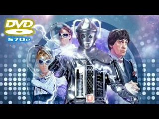
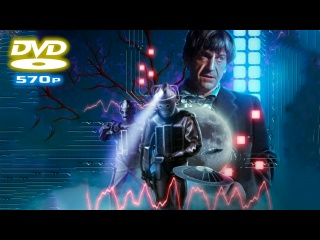
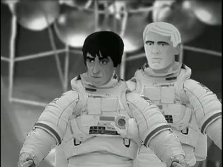
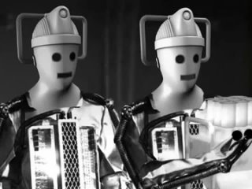
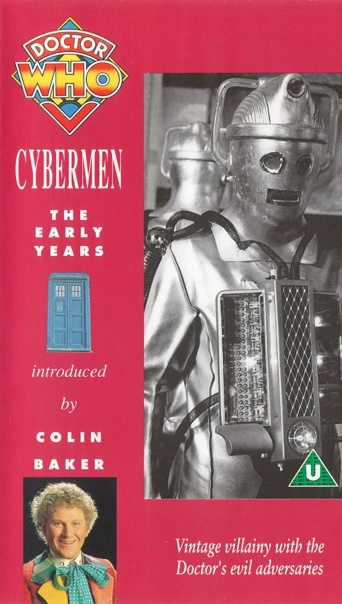
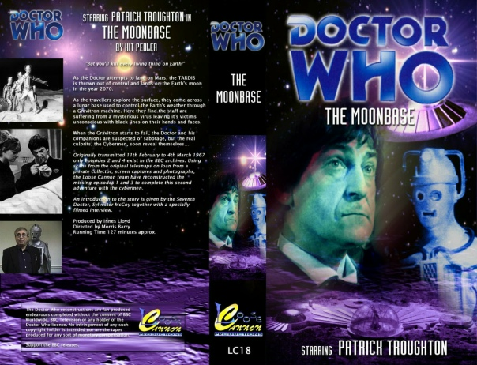
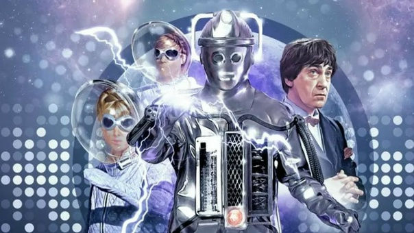
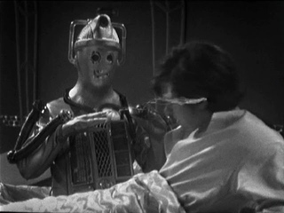

+ Реконструкция (эпизоды 1, 3) LCRecon Субтитры: Русские и Английские |  |
|---|---|
+ Черно-белая анимация (эпизоды 1, 3) Субтитры: Русские и Английские |  |
 эп.1 - Geoff Walsh |  эп.3 - Geoff Walsh |
| Сохранились 2-й и 4-й эпизоды - 16mm t/r * На утерянные 1-й и 3-й эпизоды имеется официальная ч/б анимация и реконструкция |
|---|
| | |
«Лунная база» — напряжённая осада в безвоздушном молчании: в 2070 году на станции, управляющей погодой Земли, странная болезнь и пропажи вскрывают присутствие киберлюдей, а Второй Доктор, балансируя между наукой и отчаянием, пытается сорвать их план по захвату Гравитрона — машины, способной обрушить хаос на планету. Тон истории — холодный и тесный, будто каждый коридор шепчет об угрозе, а воздух становится всё тоньше с каждым шагом к разгадке.
 VHS - 1992 |  LC recon - сентябрь 2002 |  DVD - 20 января 2014 * Версия в нашей группе + анимация |
|---|


